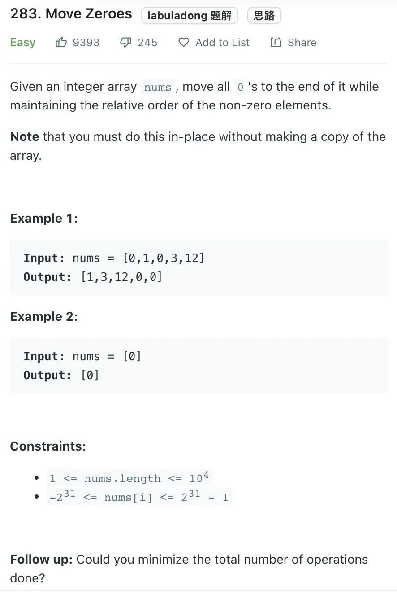

283. Move Zeroes
考過的公司：Bytedance、Google、tiktok
Question

✍🏽 My Solution
Runtime: 1 ms, faster than 100.00% of Java online submissions for Move Zeroes. Memory Usage: 43.4 MB, less than 95.46% of Java online submissions for Move Zeroes.
class Solution {
public void moveZeroes(int[] nums) {
int n = nums.length;
int j = 0;
for (int i = 0; i < n; i++) {
if (nums[i] != 0) {
int tmp = nums[i];
nums[i] = nums[j];
nums[j] = tmp;
j++;
}
}
}
}
🧠 Thought Process
- Why did I choose this particular implementation?
- 用雙指針定位已分區跟未分區
- What is the time/space complexity of my solution? How do I know?
- time: O(n)
- space: O(1)